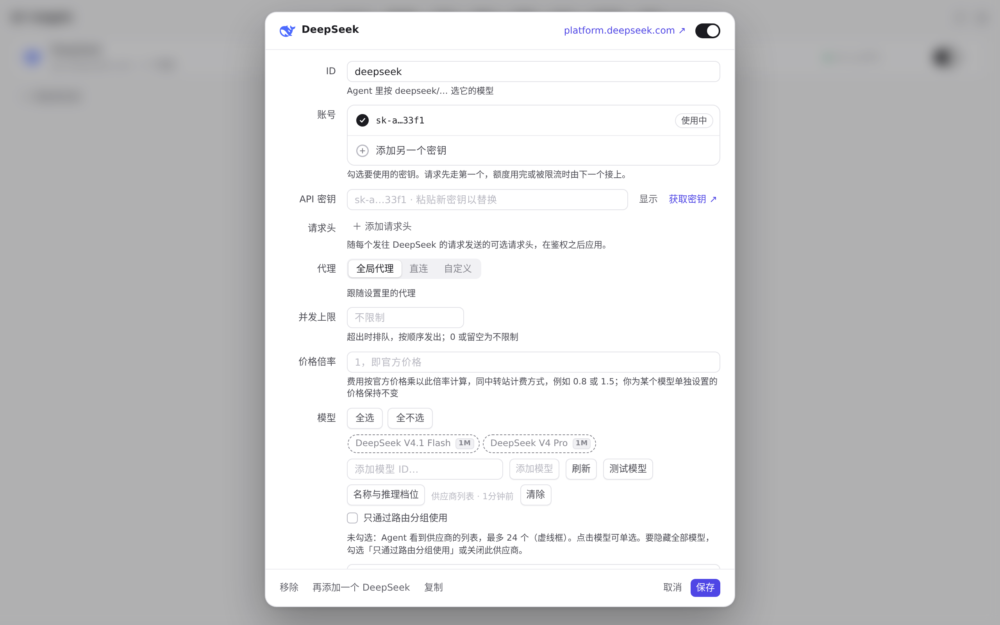
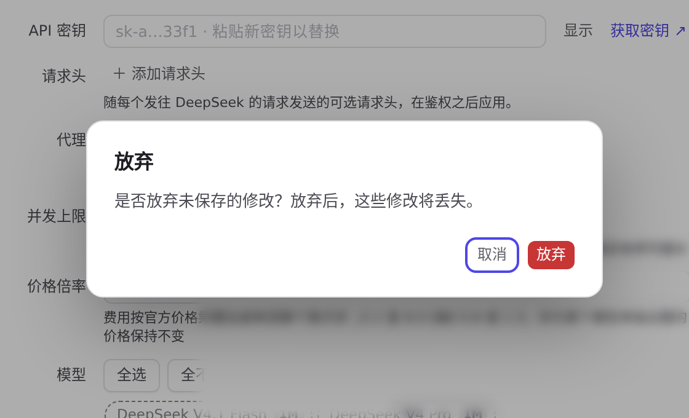
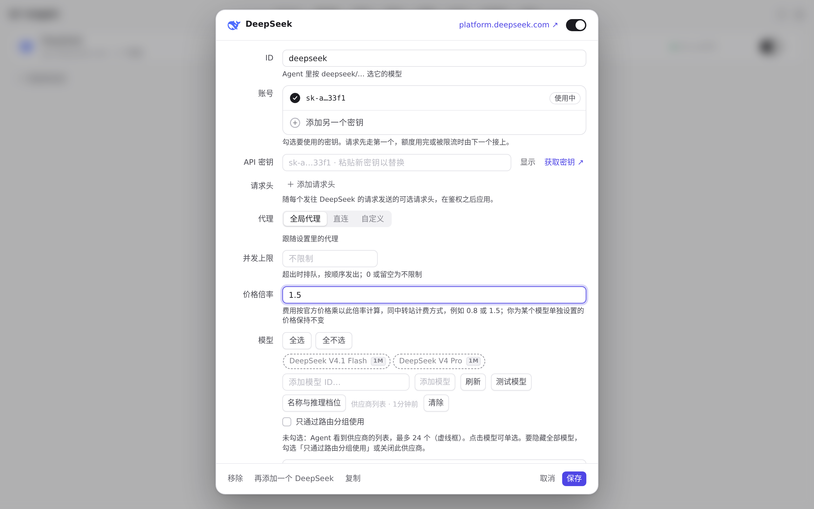
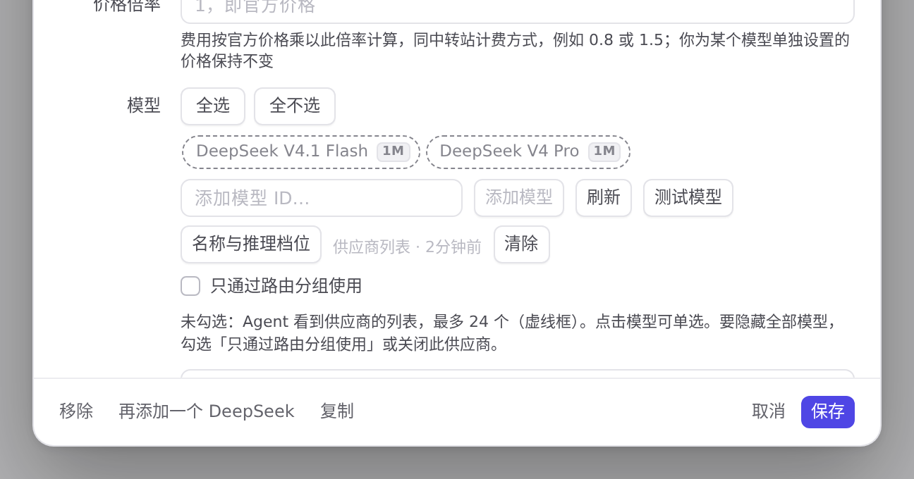

#820 界面预览
commit 6ba6bfb · 回到 PR · 为有未保存修改的供应商/路由/资源库编辑器加上应用内样式的「放弃修改」确认框，并在移除供应商、账号或密钥、路由组、插件、资源库条目时先弹出「移除」确认框（带遮罩、危险色按钮、焦点陷阱），未改动的编辑器仍可直接关闭。另外给导航加 aria-current、给对话框加 role/aria-modal 与背景 inert、把标签与说明关联到控件，并在首屏绘制前应用模式/平台类、主题与字号。
红线是鼠标走过的轨迹，红色圆环是一次点击；底部文字是这一步在做什么。空格暂停，← → 逐段查看。

供应商编辑器：未保存修改的放弃确认 · 刚打开的编辑器，没有任何改动
 供应商编辑器：未保存修改的放弃确认 · 未改动时点「取消」之后的供应商页
供应商编辑器：未保存修改的放弃确认 · 未改动时点「取消」之后的供应商页

供应商编辑器：未保存修改的放弃确认 · 按 Esc 之后出现的确认框

供应商编辑器：未保存修改的放弃确认 · 确认框里点左边按钮之后的编辑器
 供应商编辑器：未保存修改的放弃确认 · 确认之后的供应商页
供应商编辑器：未保存修改的放弃确认 · 确认之后的供应商页

移除供应商前的确认 · 编辑器底部的操作栏
 移除供应商前的确认 · 确认之后的供应商页
移除供应商前的确认 · 确认之后的供应商页